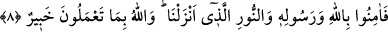
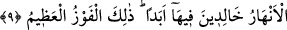

8. Onun için Allah’a, Peygamberine ve indirdiğimiz o nûra (Kur’an’a) inanın.
Allah yaptıklarınızdan haberdardır.
“O halde”, durum böyle olduğuna göre, cüz’î irâdenizi, îmânın meydana gelmesi için
gerekli sebeblere kullanarak, kabirlerden diriltecek ve gerek açık gerek gizli yapılan
her türlü amele karşılığını verecek olan, “Allah’a”, Allah’ın fiilleri ve sıfatlarına dâir
haberler veren “Peygamberine” Muhammed (s.a.)’e “ve indirdiğimiz, o nûra
(Kur’an’a) inanın.” Yâni Peygamberimiz’e indirdiğimiz o nûra inanın ki o nur
Kur’an’dır. Çünkü Kur’an, i’cazı ile kendisi apaçık olup Allah katından indirilen haktır.
Kur’an kendisi apaçık olduğu gibi ihtiyaç duyulan hususları da açıklıyor, helâl ve
haramı ortaya çıkarıyor. Nur böyle olduğu gibi, âyette biz anlamına gelen azamet nun’u
Allah’ın inâyeti ve ilgisinin tamlığını ifâde etmek içindir. “Allah” emrine sarılma ve
sarılmama gibi “yaptıklarınızdan haberdardır.” Haberdar olduğu için de sizlere bunun
karşılığını verecektir.
9. Mahşer vaktinde sizi toplayacağı gün, işte o zarar günüdür. (Ancak) kim
Allah’a inanır ve yararlı iş yaparsa, Allah onun kötülüklerini örter, onu (ve
benzerlerini), içinde ebedî kalacakları, altlarından ırmaklar akan cennetlere sokar.
İşte büyük kurtuluş budur.
Âyetteki hitap, akla gelen ilk ihtimale göre beşinci âyetteki “size ulaşmadı mı”
hitâbına muhatap olanlardır.
“Toplanma günü” yâni hesaba çekilip yaptıklarının karşılığının verilmesi için insan,
cin, gök ve yer ehlinden önceki ve sonrakilerin toplanacağı gün demektir ki bu da
kıyamet günüdür.
Peygamberimiz (s.a.)’den şöyle bir haber vârid olmuştur: “Yüce Allah öncekileri ve
sonrakileri toplayacağı gün bir seslenen gelir ve bütün yaratıklara işittiren bir sesle
şöyle seslenir: Bugün toplanacak olanlar Allah’ın ikrâmına kim daha lâyıkmış
bilecekler. Sonra döner: “Vücudları yataklarından uzak kalanlar ayağa kalksınlar.”
diye bir kez daha seslenir. Bunlar ayağa kalkarlar, fakat sayıları azdır. Sonra bir kez
daha seslenir: Sıkıntı ve darlık zamanlarında Allah’a hamdedenler ayağa kalksınlar.
Bu çağrı üzerine onlar da ayağa kalkarlar fakat sayıları azdır. Bunların tümü